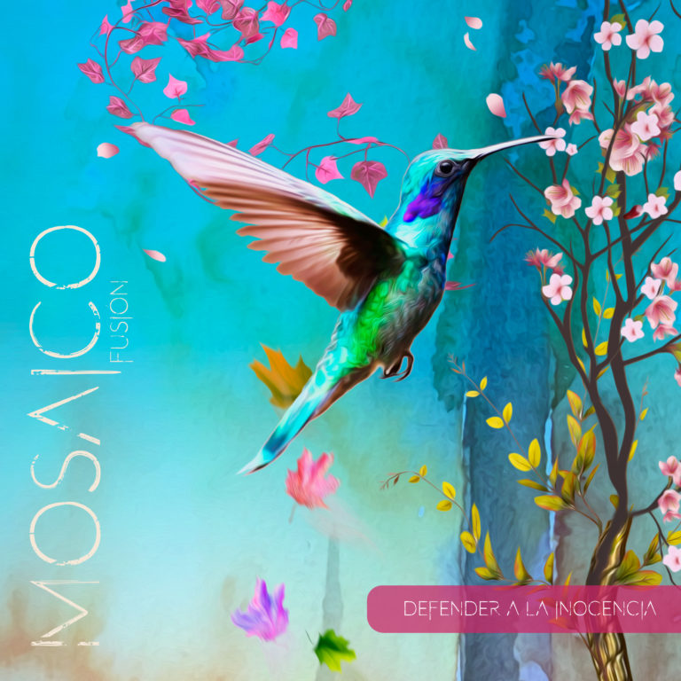
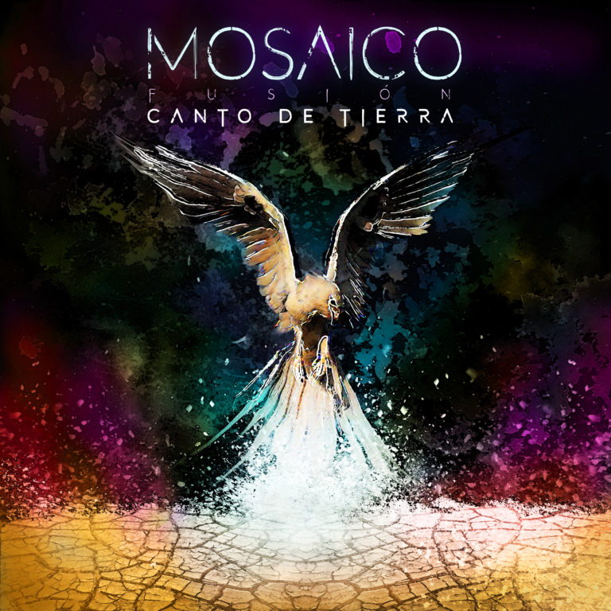
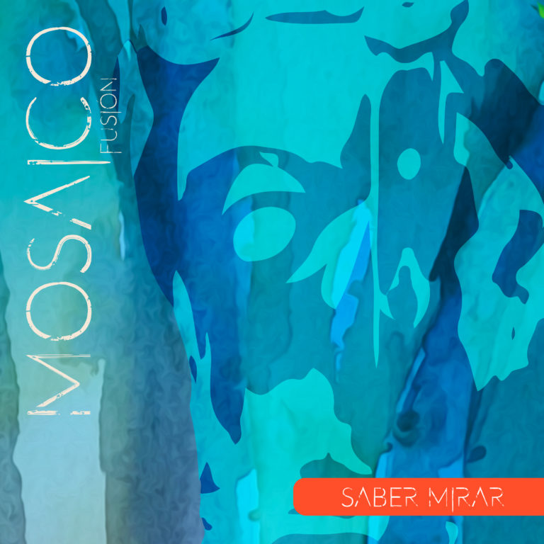

Fusión Acústica
Mosaico es una banda con varios años de experiencia, que tiene como principal característica el amor y gusto por la música, por la instrumentación y los sonidos del folclor latinoamericano. Son tres psicólogos, que encontraron en la música una vía para proyectar sus diferentes visiones de mundo y proponer experiencias musicales reflexivas y terapéuticas.
Su propuesta artística radica en su capacidad instrumental, en la belleza de composiciones y fusión estilística acompañada de letras oníricas y de amplia interpretación, que invitan a reflexionar, a desarrollar procesos introspectivos, al goce de la amistad, de la familia, a la trascendencia del mensaje a través de la poesía. Buscan representar aquel idealismo de su generación, truncado por el conformismo, el capitalismo y el miedo pos-dictadura.
|  |
Single Defender a la Inocencia Fusión latinoamericana. Música, Gustavo López, texto de Marcelo Solari con participación de Flavia Costa. Producido por Jorge Sacaan. |
|  |
Single Canto de Tierra Fusión de tonada Chilena con aires andaluces. Letra de Flavia Costa, música de Gustavo López. Producido por Jorge Sacaan. |
|  |
Single Saber Mirar Letra y Música de Gustavo López. Producido por Jorge Sacaan. |
|
Single Totalmente Yo Letra de Flavia Costa, música de Gustavo López. Producido por Jorge Sacaan. |